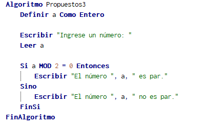

El ejercicio pide que ingrese un numero y ver si es par o no, al principio aplicamos que Ingrese un codigo para despues leer el numero ingresado el pseudocodigo "MOD" nos ayuda a saber el residuo de una division sabiendo si es par o no ya que 4/2= 2 y su residuo 0